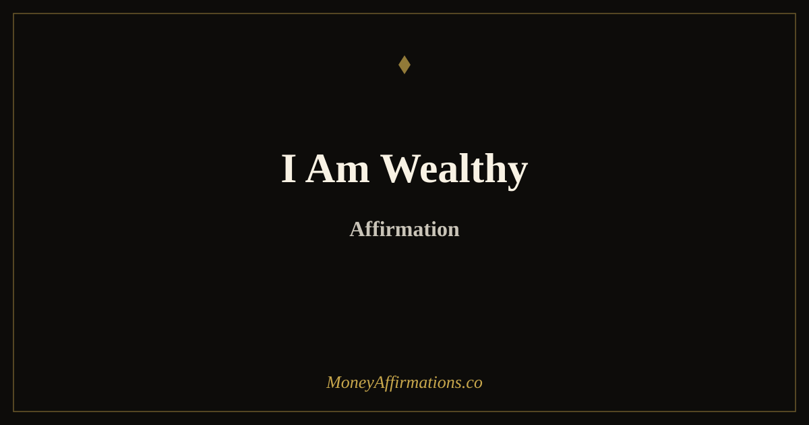

I Am Wealthy Affirmation: 50 Variations + a 7-Day Identity Practice

"I am wealthy" is one of the shortest money affirmations you can say, but it can also be one of the most confronting. It does not say "I hope to be wealthy someday" or "I am trying to become wealthy." It speaks directly to identity — and that is precisely what makes it powerful. The phrase asks your mind to practice seeing wealth as part of who you are, not only something far away that belongs to other people.
This page is built around that single phrase. All 50 affirmations below begin with "I am wealthy" — each one extending the statement in a different direction: wealth of mind, wealth of character, wealth as behaviour, wealth as calm, wealth as identity fully claimed. After the list you will find a 7-day structured practice that takes you from first contact with the phrase all the way to carrying it as a genuine belief. The words are the beginning. The practice is what makes them land.
What is the "I am wealthy" affirmation?
The I am wealthy affirmation is a present-tense identity statement. It tells your subconscious mind: "This is who I am learning to be." Identity-based affirmations are powerful because they go deeper than goal-setting. Instead of focusing on one outcome, they shape the kind of person you believe yourself to be — and that person makes different choices, holds different standards, and moves through the world with a different quality of attention.
A person who has internalised "I am wealthy" begins to ask different questions: How would a wealthy version of me handle this decision? What would I stop tolerating? What would I receive without guilt? What would I invest in? This affirmation works best when you define wealth broadly — as money, yes, but also as peace, options, time, wisdom, and the ability to choose freely. When the word feels too big, let it become spacious rather than intimidating. For a broader set of wealth-identity statements to work alongside this one, the wealth affirmations collection is the natural next step.
50 "I am wealthy" affirmations
Every affirmation below begins with the same three words. Read the full list once, then return to the ones that create the strongest reaction — either resonance or resistance. Those are the ones doing the most work.
- I am wealthy in mind, wealthy in spirit, and open to wealthy results.
- I am wealthy because I think, choose, and act from abundance.
- I am wealthy, and my life continues to reflect that truth more clearly every day.
- I am wealthy enough to make calm, wise, and empowered decisions.
- I am wealthy in opportunity, creativity, support, and financial growth.
- I am wealthy, and I allow myself to receive more with ease.
- I am wealthy because I respect money and use it with intention.
- I am wealthy in confidence, clarity, and self-trust.
- I am wealthy, and I no longer shrink away from prosperity.
- I am wealthy because I am willing to learn, grow, and expand.
- I am wealthy now, and I am becoming wealthier every day.
- I am wealthy enough to invest in my future with wisdom and patience.
- I am wealthy because abundance is safe for me to hold.
- I am wealthy, and money supports my peace, purpose, and freedom.
- I am wealthy in ideas that can create meaningful and lasting income.
- I am wealthy because I create value and allow value to return to me.
- I am wealthy, and my relationship with money grows healthier every day.
- I am wealthy enough to be generous without abandoning myself.
- I am wealthy because I choose long-term prosperity over short-term fear.
- I am wealthy in discipline, patience, and financial wisdom.
- I am wealthy, and I welcome opportunities that match my highest good.
- I am wealthy because I am no longer loyal to scarcity.
- I am wealthy, worthy, capable, and ready for more.
- I am wealthy in every way that matters, and money reflects that wealth.
- I am wealthy, and I trust myself to live from that identity fully.
- I am wealthy and I carry that identity into every room I enter.
- I am wealthy in knowledge, and that knowledge creates financial results.
- I am wealthy because I have released the stories that kept money away.
- I am wealthy, and I make decisions that honour my future self.
- I am wealthy enough to say no to what drains me and yes to what builds me.
- I am wealthy in character, and character is the foundation of lasting wealth.
- I am wealthy because I am a faithful steward of the money in my care.
- I am wealthy, and my income grows as my identity expands.
- I am wealthy in relationships that support, inspire, and elevate my life.
- I am wealthy because I show up for my finances with care and consistency.
- I am wealthy, and I no longer apologise for wanting more.
- I am wealthy in calm — I approach money without fear or desperation.
- I am wealthy because I treat myself with the respect a wealthy person deserves.
- I am wealthy, and every financial decision I make reflects that truth.
- I am wealthy enough to invest in learning, growth, and my own potential.
- I am wealthy because I believe I deserve a life that is financially supported.
- I am wealthy in resilience — setbacks do not define my financial future.
- I am wealthy, and I build real assets with patience and intention.
- I am wealthy because I think long-term and act with purpose.
- I am wealthy enough to hold firm boundaries around my time and energy.
- I am wealthy, and I am proud of the financial person I am becoming.
- I am wealthy in possibility — I see opportunities where I once saw only obstacles.
- I am wealthy because I have chosen to stop making scarcity my identity.
- I am wealthy, and my bank balance is only one measure of that truth.
- I am wealthy, I am ready, and I live from this identity every single day.
Why identity is the foundation of real wealth
Many money affirmations focus on attracting more, earning more, or receiving more. Those are valuable, but identity is the deeper layer. If you receive more money without feeling like someone who can hold wealth, you may unconsciously spend it quickly, avoid managing it, feel guilty about it, or recreate the same old patterns. The identity has to expand along with the income.
Saying "I am wealthy" consistently helps you practise becoming a person who can hold more without losing peace. You begin to see money as a responsibility and a support rather than a threat. You become more willing to learn financial skills, set clear boundaries, and make choices that honour your future self. This is why the phrase pairs so well with deeper mindset work like the money mindset guide. Wealth is not only something you accumulate. It is something you learn to embody — and that embodiment begins with the language you use about who you are.
When to use this affirmation
Use the I am wealthy affirmation before moments that ask you to choose from identity. Say it before checking your account, setting a price, deciding whether to save or spend, opening a bill, or making a plan for the month ahead. These are the moments when old money stories speak loudest. The affirmation gives you a steadier voice to respond with.
It is also powerful before receiving. If someone pays you, compliments your work, offers help, or presents an opportunity, pause and say: "I am wealthy, and I allow myself to receive." This trains your body to associate wealth with safety rather than guilt or panic. Over time, receiving becomes less dramatic and more natural — which is when real financial momentum begins to build.
A 7-day "I am wealthy" identity practice
Use this as a starter programme if you are new to the affirmation or if previous attempts have felt empty. Each day has one focus. Keep it to five minutes — consistency matters far more than duration.
Day 1 — Define your wealth. Before you say the words, write what wealth means to you personally. Include money, but go beyond it: time, peace, options, health, generosity, security. Read what you wrote, then say "I am wealthy" once and sit with it.
Day 2 — First contact. Say "I am wealthy" aloud while making eye contact with yourself in a mirror. Say it three times slowly. Notice every reaction without judging it. The discomfort, the eye-roll, the small flicker of hope — all of it is useful information about where your current belief lives.
Day 3 — Choose your three. Return to the list of 50 above and pick three affirmations that create the strongest reaction — either resonance or resistance. Repeat each one ten times, out loud, slowly. If the original feels too strong, use "I am becoming wealthy" or "I am learning to feel safe as a wealthy person" as your bridge.
Day 4 — Wealth-aligned action. After your affirmation practice, ask: what is one decision my wealthy self would make today? It might be checking your numbers calmly, saving a small amount, sending a proposal, learning something about investing, or saying no to a draining expense. Do that one thing immediately after the practice.
Day 5 — Receiving practice. Before any money arrives today — a payment, a compliment, an opportunity, a discount — say "I am wealthy, and I allow myself to receive this." Practise letting it land without deflecting, minimising, or immediately spending the feeling away.
Day 6 — Track the evidence. Write down every moment this week where you thought, chose, or acted more like the wealthy version of yourself. The list will be longer than you expect. Evidence trains the belief faster than repetition alone.
Day 7 — Commit and deepen. Choose the single affirmation from the list that resonates most strongly — or write your own version beginning with "I am wealthy." Commit to repeating it daily for 21 days. This is where the identity starts to settle.
Frequently asked questions
Is it okay to say I am wealthy if I am not rich yet?
Yes, if you understand it as an identity practice rather than a denial of reality. You are not pretending your current finances are different. You are speaking from the version of you that is learning to think, choose, receive, and manage money in a wealthier way.
What if I do not believe the I am wealthy affirmation?
Use a bridge affirmation first. Try "I am becoming wealthy" or "I am learning to feel safe with wealth." These phrases reduce resistance while still moving your mindset forward. Day 3 of the 7-day practice above is also designed specifically for this situation.
How often should I repeat I am wealthy?
Repeat it daily for at least 21 days. Use it in the morning to set your identity for the day, and before money decisions to ground your behaviour in that identity. The goal is not endless repetition — it is to let the phrase consistently influence how you act.
Can this affirmation help me build real wealth?
It can support real wealth-building when paired with practical choices. The affirmation helps you become more comfortable holding wealth, but the results come through aligned action: earning, saving, investing, learning, receiving, and making decisions from self-trust rather than fear.
For more statements that support a strong financial identity, explore the full wealth affirmations collection. You may also like the I am a money magnet guide — another single-phrase identity practice that works well alongside this one.